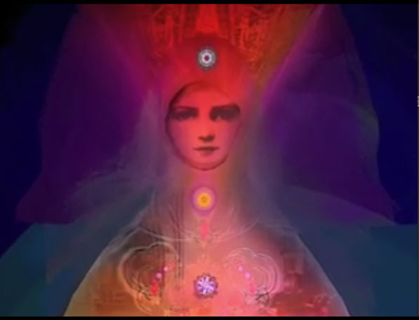

CLICK TO PLAY
Requires Quicktime. About 4 1/2 minutes playing time. This video is a composition, arranged in a slideshow, of the still images of Sara Deutsch."I am a multi-media artist, Creative Arts Therapist and educator who explores "CyberAlchemy"---the computer as a tool for transformation. My journey has led me into many worlds. I trekked alone in the Himalayas, and lived in virgin jungles of Hawaiian Islands, eating only fruit and wild vegetables. I draw from study in Psychobiology and East/West Psychology, years in a contemplative order, 26 years of private practice and teaching, and multimedia explorations."